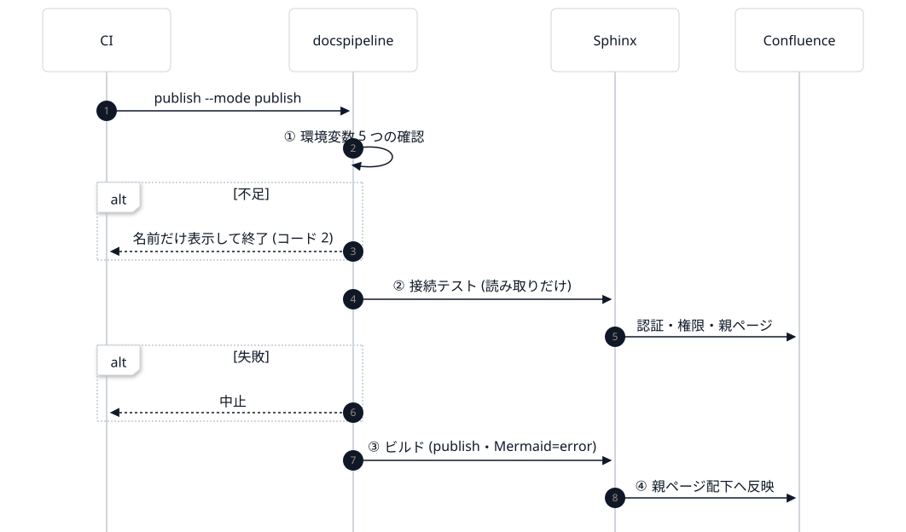

第 9 回 公開と安全設計¶
所要時間の目安: 3.5 時間 / 前提: 第 3・6・8 回
この回のゴール¶
「公開する」処理の 脅威 を、洗い出して整理できる。
安全設計の 6 つの原則 を、実際のコードで説明できる。
confluence.pyを読み、なぜ、その設定を、明示しているのか を説明できる。設定名の 誤り・改名 を、テストで守る方法を説明できる。
CI で 秘密を渡す範囲を絞る (最小権限) 方法を説明できる。
「検証できていないこと」を、正直に書く 方法を身に付ける。
この回は、「何を作ったか」より、「何を、どう防ぐと決めたか」が主題です。 コードを読む前に、脅威を言葉にする ところから始めます。
1. 脅威を言葉にする¶
文書を Confluence に公開する処理は、取り返しがつきにくい 操作です (他人のページを書き換える・消す、情報を外へ出す)。 まず、何が、どう間違いうるか を、洗い出します。
# |
脅威 |
具体的な場面 |
被害 |
|---|---|---|---|
T1 |
意図しない公開 |
モードの綴りの誤りが、黙って別の動作になる。環境に、古い設定が残っている |
公開するつもりでなかったものが、公開される (または、公開したつもりで公開されない) |
T2 |
他人のページの上書き・削除 |
親ページの外に、同じ題名のページがある。今回の出力に無いページを、掃除と称して消す |
人が手で書いたページが、失われる |
T3 |
秘密の漏洩 |
トークンが、ログ・文書・リポジトリ・CI の出力に出る。依存のインストール scripts が、環境変数を読む |
アカウントの乗っ取り |
T4 |
壊れた内容での置き換え |
図が画像にならず、コードのままのページで、置き換える (増分ビルドのキャッシュが、方針を素通りさせる) |
良いページが、壊れたページに変わる |
T5 |
サプライチェーン |
公開のジョブが、固定されていない依存 ( |
依存が改ざんされると、トークンが盗まれる |
T6 |
反応のあるページの破壊 |
読者がコメントを付けたページを、黙って上書きする |
議論の文脈が失われる |
T7 |
安全設定の無効化 |
ビルダーの設定名が、版で変わる。Sphinx は、知らない名前を 黙って無視 する |
|
脅威は、起きてから ではなく、作る前 に言葉にします。対策が、脅威に 対応している ことを、後から確かめられるからです。
2. 防御との対応¶

3. 安全設計の 6 つの原則¶
# |
原則 |
意味 |
このリポジトリでの例 |
|---|---|---|---|
1 |
安全側が既定 |
何も指定しなければ、何も起きない |
モードの既定は |
2 |
暗黙より明示 |
安全に関わる値は、環境任せにせず、コードで書く |
|
3 |
最小権限 |
必要な 場所だけ に、必要な 間だけ 渡す |
トークンは、公開のステップだけ |
4 |
早く止まる |
危ない処理の 前 に、安い検査で止める |
環境変数 → 接続テスト → ビルド、の順 |
5 |
秘密は、名前だけ |
値を、メッセージ・ログに出さない |
不足は、変数の 名前だけ を示す |
6 |
未検証は、未検証と書く |
確かめていないことを、確かめたように書かない |
「検証できていないこと」の節 |
4. confluence.py を読む¶
4.1 定数: 必須の環境変数と、秘密¶
# 抜粋ファイル: docspipeline/confluence.py
MODE_ENV = "DOCSPIPELINE_CONFLUENCE_MODE"
MODES = ("local", "dryrun", "publish")
REQUIRED_ENV = (SERVER_URL_ENV, SPACE_KEY_ENV, PARENT_PAGE_ENV, USER_ENV, TOKEN_ENV)
SECRET_ENV = (TOKEN_ENV,)
REQUIRED_ENVの中に、PARENT_PAGE_ENV(親ページ) が入っています。親ページが無いと、公開できません。 「公開先を絞ること」を、省略できない設定 にしています (原則 2)。SECRET_ENV: 伏せる対象 の一覧。値を持つ変数が増えたら、ここに足す。
4.2 モードと、足りない設定¶
current_mode は、第 3 回で読みました。綴りの誤りを、local に倒さず、エラー にします (T1)。
# 引用: docspipeline/confluence.py::missing_env
def missing_env(environ: Mapping[str, str] | None = None) -> list[str]:
"""公開に必要で、未設定の環境変数の名前を返す。"""
env = os.environ if environ is None else environ
return [name for name in REQUIRED_ENV if not env.get(name)]
足りない変数の「名前」だけ を返します (値は、見ません)。メッセージにも、名前だけが出ます (原則 5)。
4.3 sphinx_settings: 設定を、全部、明示する¶
# 引用: docspipeline/confluence.py::sphinx_settings
def sphinx_settings(
environ: Mapping[str, str] | None = None,
*,
footer_file: str | None = None,
) -> dict[str, Any]:
"""Sphinx Confluence ビルダーの設定を組み立てる。
公開の可否に関わる項目は、環境変数に頼らず必ずここで明示する。ビルダーは未設定の
``confluence_*`` を同名の環境変数から補うので、明示しないと、環境に
``CONFLUENCE_PUBLISH`` が残っているだけで意図せず公開されうる。
Args:
environ: 環境変数。省略すると ``os.environ``。
footer_file: 各ページの末尾に付ける XHTML ファイルのパス (出典・ライセンスの注記)。
Returns:
``conf.py`` の名前空間へ取り込む設定の辞書。
Raises:
ConfluenceSettingsError: ``dryrun`` / ``publish`` で必須の設定が足りないとき。
"""
env = os.environ if environ is None else environ
mode = current_mode(env)
settings: dict[str, Any] = {
"confluence_publish": False,
# 親ページの下に Sphinx の目次どおりの階層で置く。
"confluence_page_hierarchy": True,
# 手で作られたページを消さない・奪わない。いずれもビルダーの既定だが、
# 安全に関わるので明示する。trample が False だと、親ページ配下の外にある同じ題名の
# 既存ページを更新しようとした時点で、ビルダーがエラーで止まる。
"confluence_cleanup_purge": False,
"confluence_cleanup_archive": False,
"confluence_publish_trample": False,
# 未解決のインラインコメントが付いたページは更新しない (警告は出る)。
# 人が読んで反応しているページを守る。解決済みのコメントだけなら更新する。
"confluence_publish_skip_commented_pages": "ignored-resolved",
"confluence_disable_notifications": True,
}
if footer_file:
settings["confluence_footer_file"] = footer_file
if mode == "local":
return settings
missing = missing_env(env)
if missing:
raise ConfluenceSettingsError(f"{mode} モードには次の環境変数が必要です: {', '.join(missing)}")
settings.update(
{
"confluence_publish": True,
"confluence_publish_dryrun": mode == "dryrun",
"confluence_server_url": env[SERVER_URL_ENV],
"confluence_space_key": env[SPACE_KEY_ENV],
# 専用の親ページ配下だけを対象にする。
"confluence_parent_page": env[PARENT_PAGE_ENV],
"confluence_server_user": env[USER_ENV],
"confluence_api_token": env[TOKEN_ENV],
"confluence_api_token_scoped": env.get(TOKEN_SCOPED_ENV, "").lower() in _TRUE,
}
)
prefix = env.get(PAGE_PREFIX_ENV)
if prefix:
# 既存ページとの題名の衝突を避けたいときに使う。
settings["confluence_publish_prefix"] = prefix
return settings
読み方 (設定の辞書を作る関数です)。
最初に、安全な設定を、必ず入れる:
confluence_publish: False・cleanup_purge: False・cleanup_archive: False・publish_trample: False・skip_commented_pages・disable_notifications。localなら、ここで返す (公開の設定を、何も足さない)。ネットワークにつなぐ設定が、そもそも入らない。それ以外 (
dryrun/publish) は、必須の環境変数 を確かめ、足りなければConfluenceSettingsError(名前だけを示す)。そろっていれば、接続の設定を足す。
confluence_publish_dryrunは、dryrunのときだけTrue。confluence_parent_pageに、環境変数の親ページ を渡す (公開先の限定)。
設定 |
値 |
何を守るか (脅威) |
|---|---|---|
|
|
T1: 公開しない |
|
|
T1: 確認だけ (ページを変更しない) |
|
環境変数 (必須) |
T2: 親ページ配下に限る |
|
|
T2: 親ページ 外 の同名ページを、上書きしない (エラーで止まる) |
|
|
T2: 今回の出力に 無い ページを、消さない・アーカイブしない |
|
|
T6: 未解決のコメントが付いたページを、更新しない |
|
|
更新の通知で、人を煩わせない |
4.4 「環境任せにしない」の意味 (T1)¶
Confluence ビルダーは、設定が未指定のとき、同名の環境変数から値を補います (CONFLUENCE_PUBLISH など)。
つまり、環境に CONFLUENCE_PUBLISH=1 が残っているだけで、意図せず公開が有効になりえます。
そこで、sphinx_settings は、公開の可否に関わる設定を、環境変数に頼らず、必ず明示 します。
# 実行できる
from docspipeline import confluence
FULL = {
"CONFLUENCE_SERVER_URL": "https://example.atlassian.net/wiki/",
"CONFLUENCE_SPACE_KEY": "DOCS",
"CONFLUENCE_PARENT_PAGE": "Auto Docs",
"CONFLUENCE_SERVER_USER": "me@example.com",
"CONFLUENCE_API_TOKEN": "tok-0123456789abcdef",
}
local = confluence.sphinx_settings({**FULL, "CONFLUENCE_PUBLISH": "1"}) # 環境に、公開の印が残っている
print("local publish:", local["confluence_publish"], "| 接続の設定:", sorted(k for k in local if "server" in k or "api_token" in k))
dry = confluence.sphinx_settings({**FULL, confluence.MODE_ENV: "dryrun"})
print("dryrun publish:", dry["confluence_publish"], "dryrun:", dry["confluence_publish_dryrun"], "親ページ:", dry["confluence_parent_page"])
pub = confluence.sphinx_settings({**FULL, confluence.MODE_ENV: "publish"})
print("publish publish:", pub["confluence_publish"], "dryrun:", pub["confluence_publish_dryrun"])
for name in ("trample", "cleanup_purge", "cleanup_archive"):
key = "confluence_publish_trample" if name == "trample" else f"confluence_{name}"
print(" 安全の設定", key, "=", pub[key])
missing = {k: v for k, v in FULL.items() if k != "CONFLUENCE_API_TOKEN"}
try:
confluence.sphinx_settings({**missing, confluence.MODE_ENV: "publish"})
except confluence.ConfluenceSettingsError as exc:
print("不足:", exc)
# 出力
local publish: False | 接続の設定: []
dryrun publish: True dryrun: True 親ページ: Auto Docs
publish publish: True dryrun: False
安全の設定 confluence_publish_trample = False
安全の設定 confluence_cleanup_purge = False
安全の設定 confluence_cleanup_archive = False
不足: publish モードには次の環境変数が必要です: CONFLUENCE_API_TOKEN
localは、環境にCONFLUENCE_PUBLISH=1が あっても、publishがFalse。接続の設定も、入っていない。不足のメッセージに、トークンの値は出ません (名前だけ)。
4.5 トークンを伏せる¶
mask_secrets は、第 2 回で読みました。CLI が起動した子プロセスの出力を、1 行ずつ 通します (第 3 回の _run)。
5. 設定名の実在を、テストで守る (T7)¶
Sphinx は、conf.py の 知らない名前を、黙って無視 します。Confluence ビルダーの設定名が、版で 改名 されたり、
こちらが 綴りを間違えたり すると、purge=False のような安全設定が、黙って効かなくなります。
実際に、確かめてみましょう。ビルダーが 登録している 設定名を、調べます。
# 実行できる
import io
import tempfile
from pathlib import Path
from sphinx.application import Sphinx
from sphinx.util.docutils import docutils_namespace
with tempfile.TemporaryDirectory() as tmp:
root = Path(tmp)
(root / "conf.py").write_text("extensions = ['sphinxcontrib.confluencebuilder']\n", encoding="utf-8")
(root / "index.rst").write_text("題名\n====\n", encoding="utf-8")
with docutils_namespace():
app = Sphinx(str(root), str(root), str(root / "out"), str(root / "doctrees"), "confluence",
status=None, warning=None)
for name in ("confluence_cleanup_purge", "confluence_publish_trample", "confluence_purge", "confluence_publsh"):
print(f"{name:32}", "登録されている" if name in app.config.values else "**登録されていない** (黙って無視される)")
# 出力
confluence_cleanup_purge 登録されている
confluence_publish_trample 登録されている
confluence_purge **登録されていない** (黙って無視される)
confluence_publsh **登録されていない** (黙って無視される)
confluence_purge (間違い) は、登録されていません。もし、sphinx_settings に、この名前を書いていたら、何も起きず、何も防げません。
そこで、テストが、sphinx_settings の 全ての名前が、ビルダーに登録されているか を確かめます。
# 抜粋: tests/test_confluence.py::test_every_setting_name_is_registered_by_the_installed_confluence_builder
pytest.importorskip("sphinxcontrib.confluencebuilder")
from sphinx.application import Sphinx
env = {**FULL, confluence.MODE_ENV: "publish", "CONFLUENCE_API_TOKEN_SCOPED": "1", "CONFLUENCE_PAGE_PREFIX": "p"}
names = set(confluence.sphinx_settings(env, footer_file="/x"))
unknown = sorted(n for n in names if n not in app.config.values)
assert not unknown, f"ビルダーに無い設定名: {unknown}"
全モード・全オプションを有効にした 設定を作り (
names)、1 つずつapp.config.valuesと照合する。ビルダーを更新して、設定名が変わったとき、このテストが落ちる (= 黙って無効になる前に、気付ける)。
「ビルダーの設定名は、版で変わる」(設計書のリスク) への、機械的な備え です。
一般化すると: 「黙って無視される」入力 (設定名・環境変数の名前・コマンドの引数) を持つ仕組みには、 「名前が、実在するか」を確かめるテストを、必ず添える。
6. 公開のコマンド: 順序が、安全を作る¶
docspipeline publish の流れは、第 8 回で読みました。安全の観点で、もう一度見ます。

危険な処理 (④) は、最後。その前に、①安い検査 → ②読み取りだけの検査 → ③手元で壊れないか、を済ませます (原則 4)。
7. CI で、秘密を渡す範囲を絞る (T3・T5)¶
公開のジョブは、.github/workflows/ci.yml にあります。どこに、トークンが渡されているか に注目します。
# 抜粋ファイル: .github/workflows/ci.yml
publish:
# リポジトリ変数 CONFLUENCE_PUBLISH が 'true' のときだけ、main への反映で公開する
if: github.event_name == 'push' && github.ref == 'refs/heads/main' && vars.CONFLUENCE_PUBLISH == 'true'
environment: confluence
concurrency: confluence-publish
- name: Install tools
# トークンは、ここには渡さない。pip / npm が、依存のインストール scripts を走らせるため
- name: Publish to Confluence
# 接続テスト → 公開。トークンは、このステップだけに渡す。出力からは伏せられる
env:
CONFLUENCE_API_TOKEN: ${{ secrets.CONFLUENCE_API_TOKEN }}
run: docspipeline publish docs --mode publish
設定 |
意味 |
脅威 |
|---|---|---|
|
変数を |
T1 |
|
main への反映の ときだけ (PR では、公開しない) |
T1 |
|
GitHub の 環境 (承認者・シークレットの範囲を、環境ごとに設定できる) |
T3 |
|
公開が 同時に 2 つ走らない |
T2 |
トークンは、「Publish」のステップの |
|
T3・T5 |
なぜ、ステップだけに絞るのか: pip install や npm install は、依存パッケージの インストール scripts を実行します。
依存が (更新・乗っ取りで) 悪意のあるものに変わったとき、ジョブ全体の環境変数にトークンがあると、読まれて、外へ送られます。
ステップだけに渡せば、インストールの時点では、環境に、トークンが無い。
この性質も、テスト で守られています。
# 抜粋: tests/test_robustness.py::test_the_api_token_reaches_only_the_publish_step
for name, workflow in _workflows(tmp_path).items():
job = workflow["jobs"]["publish"]
assert "CONFLUENCE_API_TOKEN" not in job.get("env", {}), name
holders = [s for s in job["steps"] if "CONFLUENCE_API_TOKEN" in s.get("env", {})]
assert [s["name"] for s in holders] == ["Publish to Confluence"], name
YAML を データとして読み、「トークンを持つのが、公開のステップだけか」を検査しています。 設定ファイル (YAML) も、コードと同じように、テストできる のです。
版の固定: npm install --no-save @mermaid-js/mermaid-cli@12.0.0 のように、版を固定 します (T5)。
最新版を、毎回、自動で取り込むと、公開のジョブが、検証していないコードを、トークンの近くで実行 しえます。
雛形 (docs.yml.tmpl) には、pip install ... @main が残っています。これは 可変 なので、タグかコミットに固定する よう、コメントで促しています。
8. 検証できていないことを、正直に書く (原則 6)¶
実際の Confluence の環境 (アカウント・スペース) が 手元に無い ので、次は 未検証 です。
未検証 |
理由 |
どう書いたか |
|---|---|---|
実際の |
環境が無い |
「検証できていないこと」の節に、箇条書きで |
Mermaid の SVG の、Confluence の画面での見え方 |
〃 |
「出力ファイルに入るところまでは、確認した」と、確認した範囲を明記 |
|
〃 |
同上 |
書き方の作法:
確かめた範囲 と 確かめていない範囲 を、分けて 書く (「添付ファイルとして入るところまでは確認」)。
「たぶん大丈夫」と書かない。未検証なら、そう書き、検証の手順 (
dryrunを、専用の親ページで、まず試す) を添える。後で検証したら、書き換える (保守の周期に、見直しを入れる。第 12 回)。
未検証を隠すことは、嘘をつくことと同じ です。安全設計の文書で、これを隠すと、安全だと誤解した人が、確認せずに公開します。
9. 事例から学ぶ: 見つかった不備¶
この回の対策の多くは、レビューで見つかった不備 への対応です。振り返りの形式で、整理します (誰が悪い、ではなく、仕組みのどこに穴があったか)。
不備 |
症状 |
原因 |
見つけ方 |
対策 |
学び |
|---|---|---|---|---|---|
増分ビルドが、方針を素通り |
|
方針 (環境変数) を、環境 (キャッシュ) が覚えていない |
独立のコードレビュー + 再現 |
公開系は |
環境の外の入力 は、キャッシュを破る |
トークンの渡し範囲 |
|
ジョブ全体の |
レビュー |
ステップだけ に渡す + 構造のテスト |
最小権限 |
打ち間違いで、検査が空 |
|
存在しないパスを、エラーにしていなかった |
レビュー + 再現 |
存在しないパスは 終了コード 2 |
入力の検証 |
CI の関門が、常に成功 |
生成した CI の |
|
レビュー |
|
失敗しえない検査 は、検査ではない |
|
Sphinx が無い環境で、全コマンドが起動しない |
|
依存の地図 ( |
|
動く環境でしか試さない と、依存の誤りは見えない |
最後の行は、自分で入れた不備 です。自分のコードにも、同じ穴が空く ことを、受け入れて、仕組み (テスト・地図・レビュー) で、見つけます。
ハンズオン¶
第 4.4 節のコードで、
CONFLUENCE_PUBLISH以外の 紛らわしい環境変数 (CONFLUENCE_PURGE=1など) を足し、設定が変わらないことを確かめる。tests/test_confluence.pyの、設定名のテストを、わざと壊す:confluence.pyのconfluence_cleanup_purgeをconfluence_purgeに変えてpytestを実行する。どのテストが、落ちるか 見る (戻すこと)。.github/workflows/ci.ymlのpublishジョブを読み、「トークンが、どのステップに渡るか」を、自分の言葉で 説明する。
確認問題¶
公開処理の脅威を、3 つ以上、挙げてください (誰が・何が・どう失敗するか)。
confluence_publish: Falseを、環境変数に頼らず、必ず書く のは、なぜですか。confluence_publish_trample = Falseとconfluence_cleanup_purge = Falseは、それぞれ、何を守りますか。「早く止まる」原則で、
publishの検査の順序は、どうなっていますか。なぜ、その順ですか。Sphinx が、知らない設定名を黙って無視することは、安全設定にとって、どんな危険ですか。どう備えていますか。
トークンを、ジョブ全体の
envではなく、ステップのenvに置く理由は何ですか。「検証できていないこと」を書くとき、守る作法を 2 つ挙げてください。
(考える問題) 「公開のたびに、親ページ配下の 古いページを、自動で全部消す」機能を、足したいと言われました。 どんな 脅威 があり、何を確かめて、どう 設計 しますか。
解答¶
例: (T1) モードの綴りの誤りで、意図しない動作になる。(T2) 親ページ外の同名ページを上書きする・今回の出力に無いページを消す。 (T3) トークンが、ログ・CI の出力・依存のインストールから漏れる。(T4) 図が画像にならないまま、ページを置き換える。
ビルダーは、未指定の設定を、同名の環境変数から補う。環境に
CONFLUENCE_PUBLISH=1が 残っているだけ で、意図せず公開が有効になりうる。 コードで必ず明示すれば、環境の状態に、左右されない。trample = False: 親ページ配下の外 にある、同じ題名の既存ページを、上書きしない (エラーで止まる)。cleanup_purge = False: 今回の出力に無い ページを、消さない。どちらも、人が手で書いたページ を守る。① 環境変数 (ネットワーク不要・安い) → ② 接続テスト (読み取りだけ) → ③ ビルド (手元で壊れないか) → ④ 公開 (取り返しがつきにくい)。 安くて安全な検査を先に、危険な処理を最後に。失敗したとき、被害が出る前に止められる。
purge=Falseのような安全設定を、綴りの間違い・ビルダーの改名 で、知らないうちに 無効 にしてしまう (エラーが出ない)。 備え:sphinx_settingsの 全ての名前が、ビルダーに登録されているか を、テストで確かめる。pip install/npm installが実行する 依存のインストール scripts (悪意あるものに変わりうる) が、トークンを読めないようにするため。 公開のステップだけが、トークンを持つ (最小権限)。(a) 確かめた範囲 と 確かめていない範囲 を、分けて書く。(b) 「たぶん」と書かず、未検証と明記 し、検証の手順 を添える。 (c) 検証できたら、書き換える。
脅威: T2 の拡大版 (人が手で書いたページを、巻き込んで消す)・誤った親ページの指定での 広範囲の削除・取り戻せない。 確かめること: 削除の 対象の範囲 (親ページ配下に限るか)・どのページが、手で書かれたか を判別できるか (ラベル・作成者)・ 復元できるか (ゴミ箱・バージョン履歴)。 設計: 既定は、消さない (オプトイン)。まず 一覧だけ を出す (
dryrun)。人の承認 を挟む。対象は、ラベルなどで、自動生成と分かるページだけ。 削除ではなく アーカイブ にする案も検討する。
まとめ¶
概念 |
要点 |
このリポジトリでの例 |
|---|---|---|
脅威の整理 |
作る 前 に、何が・どう間違うかを言葉にする |
T1〜T7 |
安全側が既定 |
何も指定しなければ、何も起きない |
モード |
暗黙より明示 |
環境任せにしない |
|
最小権限 |
必要な場所・間だけ |
トークンは、公開のステップだけ |
早く止まる |
安い検査を先に |
|
名前だけを示す |
値を出さない |
|
黙って無視されるものを守る |
名前の実在を、テストで |
設定名のテスト |
設定ファイルも、テストする |
YAML をデータとして検査 |
ワークフローのテスト |
未検証は、未検証と書く |
確かめた範囲を、明記する |
「検証できていないこと」 |
次回¶
第 10 回 テスト: ここまでに出てきた テストの技法 (偽物・変異・構造・回帰) を、体系的にまとめます。